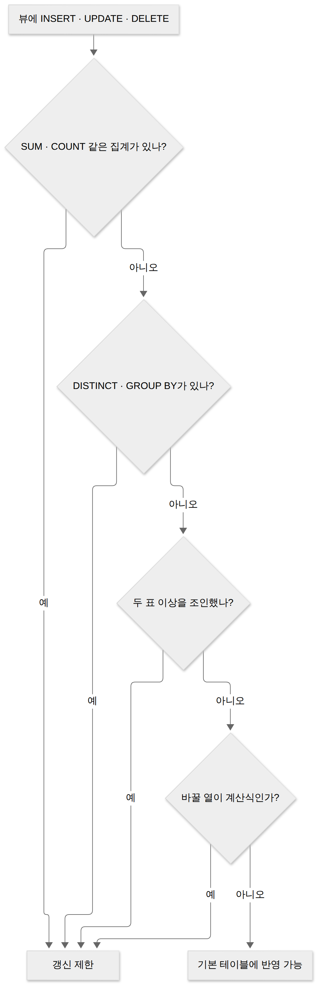

D052 · 쪼갠 표를 운영하는 하루 — ALTER TABLE 세부 · 뷰 제약과 DROP VIEW CASCADE · REVOKE 연쇄 회수 · 집계 함수 7종 · OLAP 다섯 연산
1부 (약 19분)
2부 (약 19분)
B2B1 어제 D051까지 길벗투어의 표를 5NF까지 쪼갰어요. 설계는 끝났지만 표가 실제로 운영되기 시작하면 요청이 쏟아져요. “투어 표에 정원 열이 빠졌어요”, “예약 요약은 영업팀에만 보여 주세요”, “퇴사한 인턴 권한 좀 거둬 주세요”, “월말 리포트에 평점 평균이랑 편차가 필요해요”, “경영진이 지역별 · 분기별로 돌려 보고 싶대요”. 오늘은 이 다섯 요청을 하루 동안 차례로 처리하면서, D029 · D032 · D034 · D037에서 기본만 보고 넘어갔던 SQL의 빠진 세부를 채워요. 뷰는 최근 20회 시험에 20회 모두, DDL은 19회, DCL은 17회 나왔어요.
- ALTER TABLE의 여섯 갈래(열 추가 · 열 정의 변경 · 열 삭제 · 열 이름 변경 · 제약 추가 · 제약 삭제)를 구별하고, “빠진 열 추가” 문제에서 INSERT · MODIFY 같은 함정을 피해 ALTER를 고른다
- 뷰가 행을 저장하지 않는 가상 테이블임을 설명하고, 갱신이 막히는 뷰(집계 · DISTINCT · GROUP BY · 조인 · 계산식)와 DROP VIEW … CASCADE / RESTRICT의 결과, “뷰 정의는 ALTER가 아니라 삭제 후 재생성”을 말한다
- WITH GRANT OPTION으로 이어진 권한 사슬에서 REVOKE … CASCADE가 누구의 권한까지 거두는지 단계별로 추적한다
- 집계 함수 일곱 개(COUNT · SUM · AVG · MAX · MIN · STDDEV · VARIANCE)를 나열하고 NULL 처리 규칙을 적용한다
- OLAP 다섯 연산(롤업 · 드릴다운 · 슬라이싱 · 다이싱 · 피보팅)을 큐브에서 구별하고, SQL의 ROLLUP · CUBE와 이름만 비슷한 별개 개념임을 안다
0. 오늘의 지도 — 운영하는 하루
다섯 장면은 서로 다른 단원에서 왔지만 순서에는 이유가 있어요. 먼저 표가 제대로 생겨야(ALTER) 그 표의 일부를 남에게 보여 줄 수 있고(뷰), 보여 준 다음엔 누가 볼 수 있는지 관리해야 하고(권한), 그렇게 쌓인 데이터로 숫자를 뽑고(집계), 그 숫자를 경영진이 이리저리 돌려 봐요(OLAP). 앞의 세 장면은 시험 단골이라 함정 선지까지 꼼꼼히 보고, 뒤의 두 장면은 이름과 정의를 정확히 짝짓는 데 집중해요.
tour 3행, 예약 booking 5행, 후기 review 6행, 매출 sales 8행이에요. ‘오류 시연’ 상자는 일부러 오류가 나요. 오류 메시지를 읽어 보는 게 목적이에요.1. 장면 1 — 쓰던 표를 고친다: ALTER TABLE 기출 19회
ALTER TABLE이란
ALTER TABLE은 이미 만들어져 데이터가 들어 있는 테이블의 구조(열 · 제약 조건)를 바꾸는 DDL 명령이에요. CREATE TABLE이 빈 땅에 새 건물을 짓는 명령이라면, ALTER TABLE은 사람이 살고 있는 건물을 고치는 명령이에요. 왜 따로 필요할까요? 운영 중인 표에는 이미 행이 쌓여 있어서, 열 하나 빠졌다고 DROP하고 다시 CREATE하면 그 행이 모두 사라지기 때문이에요. 이사 대신 리모델링을 택하는 셈이죠. 살던 사람(기존 행)은 그대로 두고 방만 늘리거나 문패만 바꿔요.
ALTER TABLE은 명령 하나지만 뒤에 붙는 말에 따라 하는 일이 여섯 갈래로 나뉘어요. 모두 “ALTER TABLE 테이블명” 다음에 갈래별 키워드를 적는 모양이에요.
- 열 추가 — ADD [COLUMN]: 새 열을 표 끝에 붙여요. 이미 있던 행의 새 칸에는 값이 없으니 NULL이 들어가요(DEFAULT를 함께 적으면 그 값). 그래서 NOT NULL 열을 기본값 없이 추가하면 기존 행이 규칙을 어기게 되어 거부돼요.
- 열 정의 변경: 열의 데이터 타입 · 길이 · 기본값 · NOT NULL을 바꿔요. 이 갈래만 DBMS마다 키워드가 달라요. 표준과 PostgreSQL은
ALTER COLUMN 열 TYPE 타입, Oracle · MySQL은MODIFY를 써요. 예를 들어 투어 이름이 길어져VARCHAR(20)을VARCHAR(40)으로 늘리는 일이 여기에 해당해요. - 열 삭제 — DROP [COLUMN]: 열을 통째로 없애요. 그 열을 쓰는 뷰나 제약이 있으면 기본(RESTRICT)은 거부되고,
CASCADE를 붙이면 의존하는 객체까지 함께 지워요. - 열 이름 변경 — RENAME COLUMN 옛이름 TO 새이름: 값과 타입은 그대로 두고 이름표만 바꿔요.
- 제약 추가 — ADD CONSTRAINT 이름 …: PRIMARY KEY · FOREIGN KEY · UNIQUE · CHECK를 나중에 붙여요. 붙이는 순간 기존 행이 규칙을 지키는지 검사하고, 어기는 행이 있으면 추가 자체가 실패해요.
- 제약 삭제 — DROP CONSTRAINT 이름: 붙여 둔 제약을 이름으로 떼어 내요. 그래서 제약에는 처음부터 이름을 붙여 두는 습관이 좋아요.
여기서 시험이 노리는 곳이 MODIFY예요. MODIFY는 “열 정의를 바꾼다”는 갈래를 Oracle · MySQL에서 적는 낱말이지, 혼자서 쓰는 SQL 명령이 아니에요. 공사 이름이 아니라 공사 내용 칸에 적는 단어라서, ‘방 추가 공사’ 신청서 제목에 MODIFY라고 쓰면 반려돼요. 열을 추가하는 명령은 어느 DBMS에서나 ALTER TABLE … ADD예요.
| tour_id | name | price |
|---|---|---|
| 1 | 한라산 트레킹 | 50000 |
| 2 | 제주 야경 | 30000 |
| 3 | 성산 일출 | 40000 |
① 출발점. 운영 중인 tour 3행. 정원 열이 없어요.
| tour_id | name | price | capacity |
|---|---|---|---|
| 1 | 한라산 트레킹 | 50000 | NULL |
| 2 | 제주 야경 | 30000 | NULL |
| 3 | 성산 일출 | 40000 | NULL |
② ALTER TABLE tour ADD COLUMN capacity INT. 행은 그대로 3개이고 새 칸은 모두 NULL이에요.
| tour_id | name | price | capacity |
|---|---|---|---|
| 1 | 한라산 트레킹 | 50000 | 20 |
| 2 | 제주 야경 | 30000 | 20 |
| 3 | 성산 일출 | 40000 | 20 |
③ UPDATE tour SET capacity = 20. 값 채우기는 DDL이 아니라 DML(UPDATE)이 해요.
| tour_id | name | base_price | capacity |
|---|---|---|---|
| 1 | 한라산 트레킹 | 50000 | 20 |
| 2 | 제주 야경 | 30000 | 20 |
| 3 | 성산 일출 | 40000 | 20 |
④ ALTER TABLE tour RENAME COLUMN price TO base_price. 값은 그대로, 열 이름표만 바뀌었어요.
| 시도 | 결과 |
|---|---|
| ADD CONSTRAINT price_ck CHECK (base_price >= 0) | 성공 (기존 3행 모두 0 이상) |
| UPDATE tour SET base_price = -1 … | 거부 (price_ck 위반) |
⑤ 제약을 붙이는 순간부터 새 규칙이 지켜져요. 음수 가격은 이제 들어오지 못해요.
첫 결과는 행수 3, 정원값수 0이에요. 열은 생겼지만 칸이 모두 NULL이라 COUNT(열)이 세지 않거든요(장면 4에서 다시 나와요). 마지막 결과는 세 투어가 base_price 50000 · 30000 · 40000, capacity 20으로 나와요. ALTER COLUMN name TYPE VARCHAR(40)이 PostgreSQL식 ‘열 정의 변경’이고, Oracle이었다면 ALTER TABLE tour MODIFY (name VARCHAR2(40))로 적었을 거예요.
UPDATE가 price_ck 제약 위반으로 거부돼요. 나중에 이 규칙을 없애고 싶으면 ALTER TABLE tour DROP CONSTRAINT price_ck처럼 제약 이름으로 떼어 내요.
| 하고 싶은 일 | 표준 · PostgreSQL | Oracle · MySQL |
|---|---|---|
| 열 추가 | ADD [COLUMN] 열 타입 | ADD 열 타입 |
| 열 정의 변경 (타입 · 길이) | ALTER [COLUMN] 열 [SET DATA] TYPE 타입 | MODIFY 열 타입 |
| 열 삭제 | DROP [COLUMN] 열 [CASCADE | RESTRICT] | DROP [COLUMN] 열 |
| 열 이름 변경 | RENAME [COLUMN] 옛이름 TO 새이름 | RENAME COLUMN 옛이름 TO 새이름 |
| 제약 추가 | ADD CONSTRAINT 이름 제약 | ADD CONSTRAINT 이름 제약 |
| 제약 삭제 | DROP CONSTRAINT 이름 | DROP CONSTRAINT 이름 |
그림 3. ALTER TABLE 여섯 갈래와 DBMS별 키워드. 모두 앞에 “ALTER TABLE 테이블명”이 붙어요. 달라지는 건 ‘열 정의 변경’ 한 줄뿐이에요. 교재는 이 줄을 “ALTER 열 타입”으로 적어요. 표준 · PostgreSQL 칸은 PostgreSQL 공식 문서로 확인했고, Oracle · MySQL 칸은 대표 문법만 적었어요.
CREATE와 ALTER, 그리고 DDL 한 장
ALTER를 CREATE와 짝지어 두면 문제가 쉬워져요. CREATE는 스키마 · 도메인 · 테이블 · 인덱스 · 뷰처럼 없던 객체를 새로 정의하고, ALTER는 있는 테이블의 정의를 바꾸고, DROP은 객체 자체를 없애요. 기출은 “스키마 · 도메인 · 인덱스를 정의하는 명령”에 CREATE를, “빠진 필드를 추가하는 명령”에 ALTER를 정답으로 두고, 같은 자리에 행을 다루는 DML(INSERT · UPDATE · DELETE)을 섞어 놓아요. 열(구조)을 다루면 DDL, 행(데이터)을 다루면 DML이라는 기준 하나로 거의 다 걸러져요. 하나 덧붙이면, 뷰는 ALTER TABLE처럼 정의를 고치는 명령이 없어서 바꾸려면 지우고 다시 만들어요. 이건 장면 2에서 자세히 봐요.
| 명령 | 갈래 | 하는 일 | 헷갈리는 짝 |
|---|---|---|---|
| CREATE | DDL | 스키마 · 도메인 · 테이블 · 인덱스 · 뷰 정의 | INSERT(행 넣기, DML) |
| ALTER | DDL | 테이블 구조 변경(열 · 제약) | UPDATE(값 바꾸기, DML) |
| DROP | DDL | 객체 삭제, CASCADE · RESTRICT | DELETE(행 지우기, DML) |
| TRUNCATE | DDL | 구조는 두고 행 전부 비우기 | DELETE(조건 지정 · 되돌리기 가능) |
그림 4. DDL 한 장. 왼쪽 네 명령이 DDL이고, 오른쪽 짝은 모두 DML이에요. “DDL에 해당하지 않는 것”을 물으면 오른쪽 칸에 있는 이름이 정답이에요.
결과물 → 다음 장면: 정원 열까지 갖춘 tour와 예약 표 booking이 준비됐어요. 이제 영업팀이 “예약 현황만 보고 싶다”고 해요. 표 전체를 열어 주는 대신 창문을 하나 내 줄 차례예요.
2. 장면 2 — 창문으로 보여 주기: 뷰의 규칙과 한계 기출 20회
뷰란
뷰(VIEW)는 SELECT 문 하나에 이름을 붙여 저장해 두고, 테이블처럼 조회하게 만든 가상 테이블이에요. ‘가상’인 이유는 뷰가 행을 따로 저장하지 않기 때문이에요. 저장되는 건 SELECT 문(정의)뿐이고, 누가 뷰를 조회할 때마다 그 SELECT가 기본 테이블을 읽어 결과를 만들어요. PostgreSQL 문서도 뷰는 물리적으로 만들어지지 않고 참조될 때마다 질의가 실행된다고 설명해요. 가게 진열창을 떠올리면 쉬워요. 물건(행)은 창고(기본 테이블)에 있고, 창에는 보여 주기로 정한 것만 비쳐요.
이 정의에서 뷰의 성질이 줄줄이 나와요. 행이 없으니 뷰만의 인덱스를 만들 수 없고(인덱스는 기본 테이블에 걸려 있어요), 뷰는 테이블처럼 조회되니 뷰 위에 또 뷰를 만들 수 있어요. 기본 테이블이나 아래 뷰가 사라지면 그것을 읽던 뷰도 쓸 수 없게 되고요. 장점(보안 · 단순화 · 논리적 독립성)은 D037에서 봤으니, 오늘은 만드는 규칙과 한계에 집중해요. 참고로 ‘뷰는 물리적으로 존재한다’는 문장은 기출에서 정답이 된 적이 없는 단골 오답이에요. 출제자가 그 문장을 들고 나오면 반갑게 지워 주면 돼요.
CREATE VIEW의 규칙
뷰는 CREATE VIEW 뷰이름 [(열이름, …)] AS SELECT …로 만들어요. 열 이름 목록을 생략하면 SELECT 결과의 열 이름을 그대로 물려받아요. 그런데 SUM(seats)처럼 계산된 열은 이름이 애매하니, 별칭(AS seats)을 주거나 뷰 이름 뒤 괄호에 열 이름을 적어요. 괄호에 적을 때는 SELECT의 열 개수와 같아야 해요.
뷰를 정의하는 SELECT에 무엇을 쓸 수 있는지는 자료마다 설명이 달라요. 교재는 뷰 정의 SELECT에 UNION · ORDER BY를 쓸 수 없다고 정리하지만, PostgreSQL 공식 문서는 질의로 SELECT나 VALUES를 받을 뿐 UNION을 막지 않고, ORDER BY 허용 여부도 DBMS마다 달라요. 기출은 이 부분을 직접 묻지 않았으니 “뷰 정의에는 DBMS에 따라 제약이 있다” 정도로 기억하고, 실무에서는 정렬을 뷰를 조회하는 쪽 SELECT에서 하는 게 안전해요. 책 밖 보충 PostgreSQL에는 CREATE OR REPLACE VIEW가 있지만, 기존과 같은 열(이름 · 순서 · 타입)을 내야 하고 끝에 열을 더하는 것만 허용돼요. 시험 선지에는 나오지 않아요.
뷰 갱신 제한 — 어느 행인지 짚을 수 있나
뷰를 통해 INSERT · UPDATE · DELETE를 하면, DBMS는 그 요청을 기본 테이블의 행에 대한 요청으로 바꿔서 실행해야 해요. 그러려면 뷰의 한 행이 기본 테이블의 어느 한 행인지 딱 짚을 수 있어야 해요. 예약 표에서 ‘진행 중’인 행만 골라 보여 주는 뷰라면, 뷰의 1번 예약은 기본 테이블의 1번 예약 그대로라 고칠 수 있어요. 반대로 투어별 좌석 합계를 보여 주는 집계 뷰에서 “1번 투어 좌석 합계를 9로 바꿔라”는 요청은 다섯 개 예약 중 어느 행을 얼마씩 바꾸라는 건지 정할 수가 없어요. 평균 점수 칸에 점수를 써 넣으라는 것과 같은 요청이라 거부돼요.
그래서 집계 함수 · DISTINCT · GROUP BY · 계산식 열이 들어간 뷰는 갱신이 제한되고, 여러 표를 조인한 뷰도 한 행이 여러 기본 테이블에 걸쳐 있어 제한을 받아요(조인 뷰는 DBMS에 따라 일부 열만 허용하기도 해요). 기출은 “뷰는 삽입 · 갱신 · 삭제에 제약이 없다”를 틀린 문장으로 내요. 뷰를 통해 바뀐 값이 뷰 조건을 벗어나지 못하게 막는 WITH CHECK OPTION은 D037에서 다뤘어요.

뷰는 4행, 좌석 합 11이에요(closed인 다빈 1석이 빠졌어요). 표 하나에서 조건만 건 단순한 뷰라 UPDATE가 통과하고, 기본 테이블의 가온 예약이 2석에서 3석으로 바뀌어 있어요. 뷰를 고친 게 아니라 뷰를 거쳐 창고의 물건을 고친 거예요.
PostgreSQL이 이 뷰는 자동으로 갱신할 수 없다며 거부해요. 메시지에 GROUP BY · 집계가 있는 뷰는 자동 갱신이 안 된다는 설명이 붙어요. 그림 6 사다리의 첫 칸에서 걸린 거예요.
뷰 삭제와 정의 변경 — DROP VIEW · CASCADE · RESTRICT
뷰 정의와 짝을 이루는 뷰의 삭제 문법은 DROP VIEW 뷰이름 [CASCADE | RESTRICT]이에요. 뷰를 지워도 저장된 SELECT만 사라질 뿐 기본 테이블의 행은 그대로예요. 뷰 위에 다른 뷰가 쌓여 있으면 옵션이 중요해져요. RESTRICT(PostgreSQL 기본값)는 “나를 참조하는 뷰가 있으면 지우지 않는다”로 삭제를 거부하고, CASCADE는 “나를 참조하는 뷰까지 같이 지운다”예요. D029에서 본 DROP TABLE의 CASCADE · RESTRICT와 같은 원리를 뷰에 적용한 거예요. 이름이 비슷한 외래키의 ON DELETE CASCADE(부모 행을 지우면 자식 행도 지움)와는 다른 이야기예요. 여기서는 행이 아니라 객체(뷰)가 연쇄로 지워져요.
뷰의 정의를 바꾸고 싶을 때는 어떻게 할까요? 테이블에는 ALTER TABLE이 있었지만 표준 SQL과 시험 범위에서 뷰 정의를 바꾸는 ALTER는 없어요. 뷰를 DROP한 뒤 새 SELECT로 다시 CREATE해요. 그래서 “뷰의 정의는 ALTER 문으로 변경한다”는 틀린 문장이에요.
v_top이 v_tour_seats에 기대고 있어서 지울 수 없다는 오류가 나요. 오류 메시지 끝에 “CASCADE를 쓰면 의존 객체도 지운다”는 힌트까지 붙어요.
v_top은 1번 · 2번 투어(둘 다 좌석 합 5) 두 행이에요. CASCADE로 지운 뒤 남은 뷰는 0개, booking은 5행 그대로예요. 기출의 “V_1 위에 만든 V_2, DROP VIEW V_1 CASCADE” 문제와 같은 구조로, 답은 늘 “두 뷰 모두 삭제, 기본 테이블은 무사”예요.
결과물 → 다음 장면: 영업팀은 뷰로 예약 현황을 보게 됐어요. 그런데 이 뷰를 보도록 권한을 받은 인턴이 그 권한을 다른 인턴에게, 그 인턴이 또 다른 사람에게 나눠 줬다는 사실이 밝혀졌어요. 거둘 차례예요.
3. 장면 3 — 준 권한을 거둔다: REVOKE … CASCADE 기출 17회
REVOKE와 WITH GRANT OPTION
REVOKE는 GRANT로 부여했던 권한을 회수하는 DCL 명령이에요. 모양은 GRANT와 거울처럼 짝을 이뤄요. GRANT는 GRANT 권한 ON 객체 TO 사용자로 “누구에게(TO)” 주고, REVOKE는 REVOKE 권한 ON 객체 FROM 사용자로 “누구에게서(FROM)” 거둬요. 짧게 REVOKE … ON … FROM 세 마디로 외우고, GRANT의 TO와 바꿔 쓰지 않도록 주의해요. 회수하는 건 권한이지 열 이름이나 데이터가 아니라서, “REVOKE로 열 이름을 다시 부여한다”는 기출의 틀린 문장이에요.
권한 회수가 까다로워지는 이유는 WITH GRANT OPTION 때문이에요. GRANT 끝에 이 말을 붙이면 받은 사람은 그 권한을 다른 사람에게 다시 줄 수 있는 권한까지 얻어요. 그러면 DBA → A → B → C처럼 권한이 사슬로 퍼져요. 이때 B와 C의 권한은 A의 권한에 기대고 있어서 PostgreSQL 문서는 이를 종속 권한(dependent privileges)이라고 불러요. 사원증을 거두면 그 사원이 복사해 나눠 준 출입증도 줄줄이 무효가 되는 것과 같아요. 권한을 사람마다 일일이 주는 대신 묶음에 이름을 붙여 주는 ROLE은 D032에서 봤어요.
CASCADE와 RESTRICT — 사슬을 어디까지 끊나
REVOKE 끝에도 CASCADE와 RESTRICT를 붙일 수 있어요. CASCADE는 A의 권한을 거두면서 A가 나눠 준 종속 권한(B, 그리고 B가 나눠 준 C)까지 연쇄로 회수해요. RESTRICT(PostgreSQL 기본값)는 종속 권한이 남아 있으면 회수 자체를 실패시켜요. “사슬을 끊으면 아래가 다 떨어진다는 걸 알고 하는 거냐”고 확인받는 장치예요. 그림 8과 아래 애니메이션으로 사슬을 따라가 봐요.
| 명령 | A | B | C |
|---|---|---|---|
| DBA: GRANT SELECT ON tour TO A WITH GRANT OPTION | SELECT + 재부여 | – | – |
① DBA가 A에게 SELECT를, 다시 줄 권한까지 함께 줘요.
| 명령 | A | B | C |
|---|---|---|---|
| (앞 단계) | SELECT + 재부여 | – | – |
| A: GRANT … TO B WITH GRANT OPTION | SELECT + 재부여 | SELECT + 재부여 | – |
② A가 받은 권한을 B에게 나눠 줘요. B의 권한은 A에게 기대요.
| 명령 | A | B | C |
|---|---|---|---|
| B: GRANT … TO C WITH GRANT OPTION | SELECT + 재부여 | SELECT + 재부여 | SELECT + 재부여 |
③ B가 C에게 또 나눠 줘요. 사슬 DBA → A → B → C 완성.
| 명령 | 결과 |
|---|---|
| DBA: REVOKE SELECT ON tour FROM A RESTRICT | 실패 — B · C의 종속 권한이 있음 |
④ RESTRICT(기본)로는 거둘 수 없어요. 아래에 기대는 권한이 남아 있기 때문이에요.
| 명령 | A | B | C |
|---|---|---|---|
| DBA: REVOKE SELECT ON tour FROM A CASCADE | 없음 | 없음 | 없음 |
⑤ CASCADE로 A를 거두면 A → B → C 순서로 사슬 전체가 떨어져요.
| 예외 | B의 권한 |
|---|---|
| B가 DBA에게서도 따로 SELECT를 받았다면 | 남음 (다른 경로) |
⑥ 책 밖 보충: 연쇄 회수는 ‘A에서 내려온 사슬’만 끊어요. 다른 길로 받은 권한은 살아 있어요.
| 사용자 | 회수 전 | FROM A RESTRICT 후 | FROM A CASCADE 후 |
|---|---|---|---|
| A | SELECT + 재부여 | 그대로 (명령 실패) | 없음 |
| B | SELECT + 재부여 (A에게서) | 그대로 | 없음 |
| C | SELECT + 재부여 (B에게서) | 그대로 | 없음 |
그림 9. REVOKE 전후 권한 상태. RESTRICT는 아무것도 바꾸지 못하고 실패하며, CASCADE는 사슬 전체를 거둬요.
두 가지를 덧붙여 둘게요. 책 밖 보충 첫째, 연쇄 회수는 회수 대상에게서 내려온 사슬만 끊어요. B가 DBA에게서도 따로 권한을 받았다면 A를 거둬도 B의 권한은 남아요(PostgreSQL 문서). 둘째, REVOKE GRANT OPTION FOR 권한 ON 객체 FROM A처럼 쓰면 SELECT 자체는 두고 다시 줄 권한만 거둬요. 이 경우에도 A가 이미 나눠 준 권한이 있으면 CASCADE가 필요해요. 교재는 연쇄 회수 키워드를 CASCADE CONSTRAINTS로 적는데, 표준과 PostgreSQL은 REVOKE … CASCADE예요. 시험 선지에서는 “CASCADE = 연쇄 회수”로만 판단하면 돼요. PGlite 실습 환경은 사용자가 한 명이라 권한 사슬은 실행 상자 대신 그림과 애니메이션으로 봤어요.
GRANT UPDATE ON 테이블 TO 사용자의 ON · TO 자리, REVOKE는 FROM 자리를 물어요. ③ 연쇄 회수: WITH GRANT OPTION 사슬에서 CASCADE를 붙이면 아래 사람까지 모두 회수, 안 붙이면(RESTRICT) 실패. ④ DCL이 아닌 것: SELECT(DML)를 고르면 돼요.결과물 → 다음 장면: 권한 정리가 끝났어요. 이제 월말 리포트용 숫자를 뽑을 차례예요. 후기 표의 평점을 요약해 볼게요.
4. 장면 4 — 숫자로 요약한다: 집계 함수 일곱 개
집계 함수란
집계 함수는 여러 행의 값을 모아 값 하나로 요약하는 함수예요. 표 전체에 쓰면 결과가 한 행이 되고, GROUP BY와 함께 쓰면 그룹마다 한 행씩 나와요. 그래서 그룹 함수라고도 불러요. 그룹 조건은 WHERE가 아니라 HAVING에 쓴다는 규칙, ROLLUP · CUBE 같은 GROUP BY 확장은 D034에서 봤어요. 오늘은 D034에서 다섯 개로만 본 목록을 일곱 개로 채워요.
| 함수 | 돌려주는 값 | NULL 처리 |
|---|---|---|
| COUNT(*) | 행 개수 | NULL 행도 셈 |
| COUNT(열) | 그 열 값이 있는 행 개수 | NULL 제외 |
| SUM(열) | 합계 | NULL 제외 |
| AVG(열) | 평균 (합 ÷ NULL 아닌 개수) | NULL 제외 |
| MAX(열) · MIN(열) | 최댓값 · 최솟값 | NULL 제외 |
| STDDEV(열) | 표준편차 | NULL 제외 |
| VARIANCE(열) | 분산 | NULL 제외 |
집계 함수 일곱 개. 아래 두 줄(STDDEV · VARIANCE)이 오늘 새로 넣은 것이에요. COUNT(*)만 빼고 모두 NULL을 건너뛰어요.
NULL 규칙이 핵심이에요. 후기 표 review는 6행인데 그중 2행은 아직 평점을 남기지 않아 rating이 NULL이에요. COUNT(*)는 행 자체를 세니 6, COUNT(rating)은 값이 있는 칸만 세니 4예요. 평균도 남은 4개 값(5 · 4 · 3 · 4)의 합 16을 4로 나눠 4.0이에요. 만약 “평점이 없는 건 0점으로 치자”고 정했다면 AVG(COALESCE(rating, 0))처럼 NULL을 0으로 바꿔야 하고, 그러면 16 ÷ 6 ≈ 2.67로 확 달라져요. NULL은 0이 아니라 ‘모름’이라서 집계가 아예 빼고 계산한다는 점을 기억해요.
분산과 표준편차
새로 넣은 두 함수는 통계 용어예요. 분산(VARIANCE)은 값들이 평균에서 얼마나 흩어져 있는지를 나타내는 수로, 각 값과 평균의 차이(편차)를 제곱해서 평균을 내요. 제곱하는 이유는 평균보다 큰 쪽(+)과 작은 쪽(−) 편차가 서로 지워지지 않게 하려는 거예요. 표준편차(STDDEV)는 분산의 제곱근이에요. 분산은 제곱을 했으니 단위도 ‘점수²’가 되는데, 제곱근을 씌우면 원래 단위(점수)로 돌아와 “평균에서 대략 몇 점쯤 떨어져 있나”로 읽을 수 있어요. 분산이 흩어짐을 재는 자라면, 표준편차는 그 자의 눈금을 원래 단위로 되돌린 거예요.
평점 5 · 4 · 3 · 4의 평균은 4, 편차는 1 · 0 · −1 · 0, 제곱하면 1 · 0 · 1 · 0이고 합은 2예요. PostgreSQL의 VARIANCE · STDDEV는 표본 분산 · 표본 표준편차(var_samp · stddev_samp의 별칭)라서 n이 아니라 n−1 = 3으로 나눠요. 분산 2 ÷ 3 ≈ 0.6667, 표준편차 √0.6667 ≈ 0.8165예요. 책 밖 보충 전체를 모집단으로 보고 n으로 나누는 VAR_POP · STDDEV_POP은 0.5 · 0.7071이 나와요. DBMS마다 VARIANCE가 어느 기준인지 다를 수 있으니 실무에서는 문서를 확인해요. 시험은 “STDDEV = 표준편차, VARIANCE = 분산, 둘 다 집계 함수”까지만 물어요.
첫 결과는 6 · 4 · 16 · 4.0 · 5 · 3 · 0.6667 · 0.8165 · 2.6667이에요. 두 번째는 0.5000 · 0.7071이고요. 마지막은 투어별로 나눠 본 것인데, 1번 투어는 후기 3개 중 평점 2개로 평균 4.5, 2번은 후기 2개 중 평점 1개로 평균 3, 3번은 1개로 평균 4예요. GROUP BY를 붙이면 같은 함수가 그룹마다 한 번씩 돌아요.
결과물 → 다음 장면: 리포트 숫자는 나왔어요. 그런데 경영진은 이 숫자를 지역별로, 분기별로, 상품별로 이리저리 바꿔 보고 싶어 해요. 한 장짜리 표로는 부족해서 큐브가 필요해요.
5. 장면 5 — 여러 기준으로 돌려 본다: OLAP 다섯 연산
OLAP이란
OLAP(Online Analytical Processing, 온라인 분석 처리)은 같은 데이터를 지역 · 상품 · 기간 같은 여러 기준(차원)으로 바꿔 가며 대화식으로 분석해, 사용자의 의사결정을 돕는 처리 방식이에요. 대비되는 짝이 OLTP(Online Transaction Processing)예요. OLTP는 예약 접수 · 결제처럼 행 몇 개를 빠르고 정확하게 넣고 고치는 일을 하고, OLAP은 쌓인 수많은 행을 읽어 요약하고 비교하는 일을 해요. 오늘 장면 1~4가 OLTP 쪽 일상이었다면, 장면 5는 그 결과를 분석하는 쪽이에요.
OLAP은 데이터를 데이터 큐브로 생각해요. 큐브는 스프레드시트를 여러 차원으로 늘린 다차원 배열이에요. 축 하나하나가 차원(지역 · 상품 · 분기)이고, 축이 만나는 칸마다 들어 있는 숫자가 측정값(매출)이에요. 차원에는 보통 계층이 있어요. 분기는 모이면 반기 · 연도가 되고, 도시는 모이면 지역이 돼요. 길벗투어 매출 큐브는 지역 2 × 상품 2 × 분기 2 = 8칸이고, 모두 더하면 61이에요. 루빅스 큐브 칸마다 매출을 적어 두고, 돌려 보고 한 줄만 뽑아 보고 접어 보는 게 OLAP 연산이에요.
다섯 연산
롤업(Roll-up)은 차원의 계층을 따라 위로 올라가며 상세한 데이터를 요약하는 연산이에요. 분기별 매출을 연도별로, 지역 × 상품 × 분기 8칸을 지역별 합계로 모으는 식이에요. 제주로 롤업하면 10 + 12 + 6 + 8 = 36, 부산은 25예요. 반대 방향이 드릴다운(Drill-down)으로, 요약된 데이터에서 계층을 따라 내려가 더 상세한 데이터를 보는 연산이에요. 제주 36을 분기로 쪼개면 1분기 16, 2분기 20이 보여요. 둘은 같은 계단을 오르내리는 한 쌍이에요.
슬라이싱(Slicing)은 한 차원의 값 하나를 고정해 큐브를 얇게 한 장 잘라 내는 연산이에요. 분기 = 1Q로 고정하면 지역 × 상품 2 × 2 한 장이 남고, 차원이 하나 줄어요(합 28). 다이싱(Dicing)은 여러 차원에 동시에 조건을 걸어 작은 부분 큐브를 잘라 내는 연산이에요. 지역 = 제주이면서 분기 = 2Q처럼 두 축 이상을 함께 좁히면 트레킹 12 · 야경 8, 합 20이 남아요. 칼질을 한 방향으로만 하면 슬라이스, 여러 방향으로 하면 다이스(주사위 모양 조각)라고 기억하면 돼요.
피보팅(Pivoting)은 보고서의 행과 열에 놓인 차원 축을 서로 바꿔(회전해) 다른 관점에서 보는 연산이에요. 데이터는 하나도 바뀌지 않고 배치만 달라져요. 행에 지역, 열에 상품을 둔 표(제주 22 · 14, 부산 16 · 9)를 돌리면 행에 상품, 열에 지역이 와요. 엑셀의 피벗 테이블이 바로 이 동작을 하는 도구예요.
| 분기 | 지역 | 트레킹 | 야경 |
|---|---|---|---|
| 1Q | 제주 | 10 | 6 |
| 1Q | 부산 | 7 | 5 |
| 2Q | 제주 | 12 | 8 |
| 2Q | 부산 | 9 | 4 |
① 출발점. 지역 × 상품 × 분기 8칸 큐브를 분기 층별로 펼쳤어요. 총합 61.
| 분기 | 지역 | 트레킹 | 야경 |
|---|---|---|---|
| 1Q | 제주 | 10 | 6 |
| 1Q | 부산 | 7 | 5 |
| 2Q | 제주 | 12 | 8 |
| 2Q | 부산 | 9 | 4 |
② 슬라이싱: 분기 = 1Q 한 값만 고정. 2 × 2 한 장(합 28)이 남고 분기 차원이 사라져요.
| 분기 | 지역 | 트레킹 | 야경 |
|---|---|---|---|
| 1Q | 제주 | 10 | 6 |
| 1Q | 부산 | 7 | 5 |
| 2Q | 제주 | 12 | 8 |
| 2Q | 부산 | 9 | 4 |
③ 다이싱: 지역 = 제주, 분기 = 2Q 두 축을 함께 좁혀 작은 조각(12 · 8, 합 20)만 남겨요.
| 지역 | 매출 합 |
|---|---|
| 제주 | 36 |
| 부산 | 25 |
| 전체 | 61 |
④ 롤업: 상품 · 분기를 접어 지역 수준으로 요약해요. 계층을 위로 올라갔어요.
| 지역 | 분기 | 매출 합 |
|---|---|---|
| 제주 | 1Q | 16 |
| 제주 | 2Q | 20 |
| 부산 | (그대로) | 25 |
⑤ 드릴다운: 제주 36을 분기로 다시 펼쳐 16 · 20을 봐요. 계층을 아래로 내려갔어요.
| 상품 \ 지역 | 제주 | 부산 |
|---|---|---|
| 트레킹 | 22 | 16 |
| 야경 | 14 | 9 |
⑥ 피보팅: ‘지역 × 상품’ 표의 행과 열을 바꿔 ‘상품 × 지역’으로 돌렸어요. 숫자는 그대로, 보는 방향만 바뀌어요.
| 연산 | 하는 일 | 결과 모양 | 오늘 사례 |
|---|---|---|---|
| 롤업 | 계층 위로, 상세 → 요약 | 칸 수 줄고 값은 합쳐짐 | 제주 36 · 부산 25 |
| 드릴다운 | 계층 아래로, 요약 → 상세 | 칸 수 늘어남 | 제주 1Q 16 · 2Q 20 |
| 슬라이싱 | 한 차원 값 하나 고정 | 차원 하나 줄어든 한 장 | 1Q 한 장 합 28 |
| 다이싱 | 여러 차원에 조건 | 작은 부분 큐브 | 제주 · 2Q 합 20 |
| 피보팅 | 행 · 열 축 회전 | 값 그대로, 배치만 바뀜 | 지역 × 상품 → 상품 × 지역 |
그림 13. OLAP 다섯 연산 비교. 롤업 · 드릴다운은 ‘높이(계층)’를, 슬라이싱 · 다이싱은 ‘자르기’를, 피보팅은 ‘돌리기’를 바꿔요.
슬라이스는 4칸(부산 야경 5 · 트레킹 7, 제주 야경 6 · 트레킹 10), 합 28이에요. 다이스는 제주 2분기 야경 8 · 트레킹 12 두 칸이에요. SQL로는 둘 다 WHERE 조건인데, 조건을 거는 차원이 하나인지 여럿인지가 이름을 가른다는 점을 눈여겨봐요.
롤업 결과는 부산 25 · 제주 36 · 전체(NULL 줄) 61이에요. 드릴다운하면 4칸, 부산 1Q 12 · 2Q 13, 제주 1Q 16 · 2Q 20이에요. 여기서 SQL의 ROLLUP을 빌려 썼지만, 이름이 같다고 같은 개념은 아니에요. 바로 아래 표에서 정리해요.
첫 표는 부산 16 · 9, 제주 22 · 14이고, 돌린 표는 야경 14 · 9, 트레킹 22 · 16이에요. 네 숫자가 자리만 바꿨을 뿐 그대로예요. 이게 피보팅이에요.
| 이름 | 정체 | 어디서 나오나 |
|---|---|---|
| ROLLUP (SQL) | GROUP BY 확장 문법. 소계 · 총계 행을 덧붙임 | D034 · 2과목 SQL |
| CUBE (SQL) | GROUP BY 확장 문법. 모든 조합의 소계 | D034 · 2과목 SQL |
| 롤업 (OLAP) | 분석 동작. 계층을 올라가 요약 | 오늘 · OLAP 연산 |
| 데이터 큐브 (OLAP) | 차원 × 측정값의 다차원 데이터 모양 | 오늘 · OLAP |
| 피보팅 · 피벗 테이블 | 축 회전 동작 · 그 동작을 하는 표 도구 | 오늘 · OLAP |
그림 14. 이름 혼동 정리. SQL의 ROLLUP · CUBE는 ‘문법’, OLAP의 롤업 · 큐브는 ‘분석 동작과 데이터 모양’이에요. SQL ROLLUP으로 OLAP 롤업을 구현할 수는 있지만, “집계 함수가 아닌 것”이나 “OLAP 연산이 아닌 것”을 물을 때 둘을 섞지 않아요.
책 밖 보충 롤업은 합 · 개수 · 최댓값 · 최솟값처럼 부분 결과를 다시 모아도 되는 측정값에서는 쉽지만, 중앙값처럼 부분 결과만으로 전체를 낼 수 없는 측정값에서는 원본을 다시 읽어야 해요. 큐브를 미리 계산해 두는 OLAP 도구가 SUM · COUNT를 좋아하는 이유예요.
결과물 → 다음 장면: 고친 표, 보여 줄 뷰, 정리된 권한, 요약 숫자, 분석 큐브까지 하루가 끝났어요. 마지막으로 오늘 쓴 명령을 갈래별로 한 줄에 놓아 봐요.
6. 마무리 — 오늘 하루를 한 줄로
오늘 처리한 다섯 요청을 SQL 갈래로 다시 보면, 구조를 바꾼 ALTER와 창을 낸 CREATE VIEW · DROP VIEW는 DDL, 권한을 거둔 REVOKE는 DCL, 숫자를 뽑은 집계 SELECT는 DML이에요. OLAP은 SQL 갈래가 아니라 그 결과를 분석하는 방식이고요. 그런데 오늘 장면 1에서 열을 추가하고 값을 채우는 사이에 누군가 그 표를 읽었다면, 혹은 UPDATE 도중 서버가 멈췄다면 어떻게 될까요? 여러 변경이 한 묶음으로 “전부 되거나 전부 안 되어야” 하는 문제, 그게 내일 D053 트랜잭션 이야기예요.
| 헷갈리는 짝 | 가르는 질문 |
|---|---|
| ALTER ↔ MODIFY | SQL 명령인가(ALTER), 열 정의 변경을 적는 DBMS 낱말인가(MODIFY)? |
| ALTER ↔ UPDATE | 구조(열)를 바꾸나(DDL), 값(행)을 바꾸나(DML)? |
| 뷰 ↔ 기본 테이블 | 행을 저장하나? 뷰는 SELECT만 저장, 인덱스도 없음 |
| DROP VIEW CASCADE ↔ RESTRICT | 의존 뷰까지 지우나(CASCADE), 의존 뷰가 있으면 거부하나(RESTRICT)? 기본 테이블은 둘 다 무사 |
| DROP … CASCADE ↔ ON DELETE CASCADE | 객체(뷰 · 테이블)가 연쇄로 지워지나, 행이 연쇄로 지워지나? |
| REVOKE CASCADE ↔ RESTRICT | 종속 권한까지 거두나, 종속 권한이 있으면 실패하나? |
| COUNT(*) ↔ COUNT(열) | NULL 행도 세나(*)? |
| 분산 ↔ 표준편차 | 제곱 단위인가(분산), 제곱근을 씌워 원래 단위인가(표준편차)? |
| 롤업 ↔ 드릴다운 | 계층을 올라가 요약하나, 내려가 상세히 보나? |
| 슬라이싱 ↔ 다이싱 | 한 차원만 고정하나, 여러 차원에 조건을 거나? |
오늘의 가르는 질문 표. 시험 직전에는 이 표만 다시 봐도 오늘 함정 대부분을 피할 수 있어요.
지난번 헷갈렸던 개념 다시 한 번
확인 문제 6~10번은 오늘 범위(SQL)와 상관없는, 예전에 틀렸던 개념의 재확인이에요. 원래 문제와 문장 · 보기 순서를 바꿨어요. 4 · 5번은 3주쯤 지난 1과목 범위의 누적 문제예요. 아래 질문을 먼저 스스로 답해 보고 문제로 가세요.
| 개념 짝 | 스스로 물어볼 질문 |
|---|---|
| 상태 패턴 ↔ 전략 패턴 | 다음 행동 객체로 갈아 끼우는 주체가 객체 자신인가, 바깥의 사용하는 쪽인가? |
| UML 일반화 ↔ 실체화 | 선이 실선인가 점선인가? 끝 모양은 둘 다 빈 삼각형이에요 |
| 병합 정렬 ↔ 퀵 정렬 | 입력이 최악으로 들어와도 n log n이 보장되나? 추가 공간이 드나? |
| 순차적 응집도 ↔ 절차적 응집도 | 앞 기능의 출력 데이터가 다음 기능으로 넘어가나, 실행 순서만 정해져 있나? |
| GoF 구조 패턴 ↔ 행위 패턴 | 클래스 · 객체를 엮어 더 큰 구조를 만드나, 객체 사이의 책임 · 알고리즘 분배를 다루나? |
참고: 수제비 2027 기본서의 ALTER TABLE · 뷰 생성과 삭제 · REVOKE · 집계 함수 · OLAP 해설 범위를 확인하고, PostgreSQL 공식 문서(ALTER TABLE · CREATE VIEW · DROP VIEW · REVOKE · Aggregate Functions)와 Wikipedia OLAP cube 문서와 대조해 내 말과 길벗투어 사례로 새로 썼어요. REVOKE의 다른 경로 · GRANT OPTION FOR, 표본/모집단 분산, CREATE OR REPLACE VIEW, 롤업과 중앙값은 책 밖 보충이에요. 실행 상자 결과는 브라우저 안 PostgreSQL(PGlite) 기준이에요.
확인 문제
1~3번은 오늘 범위, 4~5번은 지난 범위 누적, 6~10번은 지난 오답 재확인이에요.
- 길벗투어 DB 담당자가 tour 테이블을 만들어 운영하던 중 ‘정원(capacity)’ 열을 빠뜨린 것을 알았다. 이미 들어 있는 행은 지우지 않고 열만 덧붙이려 할 때 알맞은 SQL은?
- 두 테이블을 조인해 뷰 V_1을 만들고, V_1을 조회하는 뷰 V_2를 다시 만들었다. 이후
DROP VIEW V_1 CASCADE;를 실행했을 때의 결과로 옳은 것은? - DBA가 사용자 A에게 tour 테이블의 SELECT 권한을 WITH GRANT OPTION으로 주었고, A는 B에게, B는 C에게 같은 방식으로 다시 주었다. 이때 DBA가
REVOKE SELECT ON tour FROM A CASCADE;를 실행하면 어떻게 되는가? (B · C는 다른 경로로 권한을 받은 적이 없다) - 어떤 모듈이 다른 모듈 내부의 지역 데이터를 직접 고치거나, 그 모듈의 중간 지점으로 곧바로 분기해 들어가는 경우의 결합도로, 결합도 가운데 가장 강한 것은?
- 상향식 통합 테스트에서 하위 모듈은 완성됐지만 그것을 호출할 상위 모듈이 아직 없을 때, 상위 모듈 역할을 대신해 하위 모듈에 입력을 넘기고 결과를 받아 주는 임시 프로그램은?
- 주문 객체가 ‘접수 → 배송 중 → 완료’ 단계별 객체에 요청 처리를 맡기고, 각 단계 객체는 일을 마치면 주문이 가리키는 단계 객체를 스스로 다음 단계 객체로 바꿔 끼운다. 그래서 같은 ‘취소’ 요청에도 단계마다 다르게 반응한다. 이 구조에 해당하는 디자인 패턴은?
- UML 클래스 다이어그램에서 자식 클래스로부터 부모 클래스 쪽으로 실선을 긋고, 부모 쪽 끝에 속이 빈 삼각형을 붙인 관계는?
- 배열을 반으로 나눠 각각 정렬한 뒤 차례로 합치는 방식이라, 입력이 어떤 순서로 들어와도 최악 시간 복잡도가 O(n log n)이고 합치는 동안 추가 저장 공간이 필요한 정렬은?
- 한 모듈 안에서 앞 기능이 만든 출력값이 곧바로 뒤 기능의 입력값으로 쓰이도록 기능들이 묶인 경우의 응집도는?
- GoF 디자인 패턴 중 구조(Structural) 패턴으로만 묶인 것은?
고른 뒤 답안 복사 → 디스코드 공부 채널에 붙여넣기 하면 돼요.
답장: 정처기 D052: 1)번호 2)번호 3)번호 4)번호 5)번호 6)번호 7)번호 8)번호 9)번호 10)번호